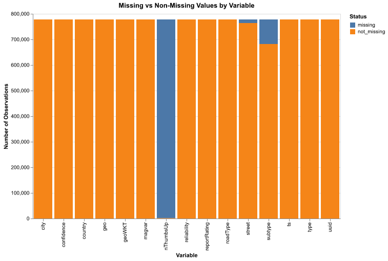
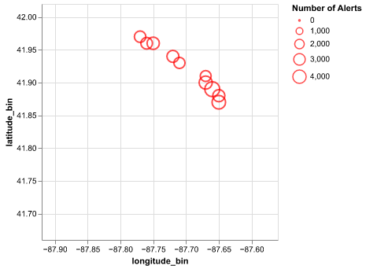
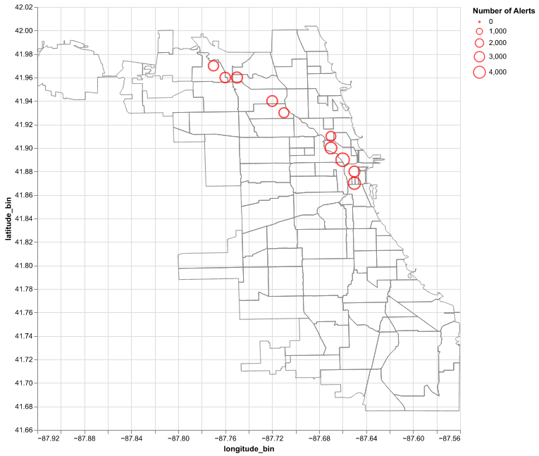
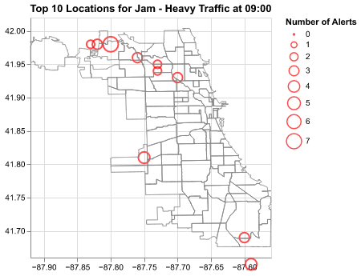
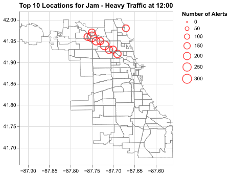
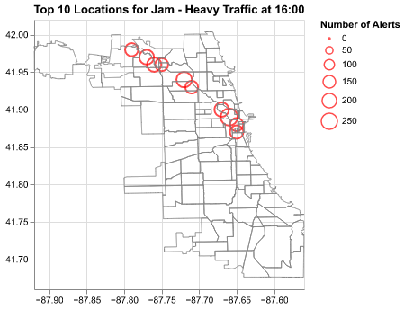
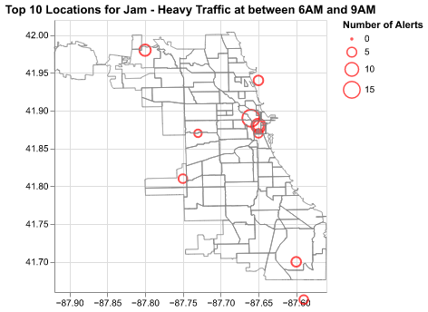
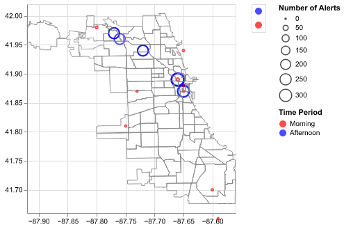

RendererRegistry.enable('png')Problem Set 6 - Waze Shiny Dashboard
- ps6: Due Sat 23rd at 5:00PM Central. Worth 100 points + 10 extra credit.
We use (*) to indicate a problem that we think might be time consuming.
Steps to submit (10 points on PS6)
- “This submission is my work alone and complies with the 30538 integrity policy.” Add your initials to indicate your agreement: **__**
- “I have uploaded the names of anyone I worked with on the problem set here” **__** (2 point)
- Late coins used this pset: **__** Late coins left after submission: **__**
- Knit your
ps6.qmdas a pdf document and name itps6.pdf. - Push
ps6.qmd,ps6.pdf, and all created folders (we will create three Shiny apps so you will have at least three additional folders) to your Github repo. It is fine to use Github Desktop. - Submit
ps6.pdfand also link your Github repo via Gradescope (8 points)- The PDF should not be more than 25 pages. Use
head()and re-size figures when appropriate.
- The PDF should not be more than 25 pages. Use
- Tag your submission in Gradescope
Note: see the Quarto documentation (link) for directions on inserting images into your knitted document.
Import requisite packages.
Background
Data Download and Exploration
Prior to starting the problem set, you should have downloaded the required data for this problem from here. The data dictionary for this dataset is here.
- Using the
zipfilepackage, unzip thewaze_data.zipfile. You will find two files in the unzipped folder:waze_data.csv(the whole dataset) andwaze_data_sample.csv(a sample of 1% of the data). Load thewaze_data_sample.csvfile into a pandas DataFrame. What are the variable names and what are their data types? When reporting data types, report using the Altair syntax (e.g., Quantitative, Nominal, etc.). When reporting data types, ignore the columnsts,geo, andgeoWKT.
import zipfile
import pandas as pd
# Unzip the data file
# They could create a path, but anything should work
waze_data_path = "waze_data.zip"
with zipfile.ZipFile(waze_data_path, 'r') as zip_ref:
zip_ref.extractall('data')
# Read the unzipped CSV into a pandas DataFrame
df_waze = pd.read_csv('data/waze_data.csv')# Display basic info about the DataFrame
print("Number of rows:", len(df_waze))
print("\nDataFrame info:") # They should get 7_781
df_waze.info()
df_waze.head()Number of rows: 778094
DataFrame info:
<class 'pandas.core.frame.DataFrame'>
RangeIndex: 778094 entries, 0 to 778093
Data columns (total 15 columns):
# Column Non-Null Count Dtype
--- ------ -------------- -----
0 city 778094 non-null object
1 confidence 778094 non-null int64
2 nThumbsUp 1371 non-null float64
3 street 764021 non-null object
4 uuid 778094 non-null object
5 country 778094 non-null object
6 type 778094 non-null object
7 subtype 682008 non-null object
8 roadType 778094 non-null int64
9 reliability 778094 non-null int64
10 magvar 778094 non-null int64
11 reportRating 778094 non-null int64
12 ts 778094 non-null object
13 geo 778094 non-null object
14 geoWKT 778094 non-null object
dtypes: float64(1), int64(5), object(9)
memory usage: 89.0+ MBE:\Anaconda\Lib\site-packages\IPython\core\formatters.py:344: FutureWarning:
In future versions `DataFrame.to_latex` is expected to utilise the base implementation of `Styler.to_latex` for formatting and rendering. The arguments signature may therefore change. It is recommended instead to use `DataFrame.style.to_latex` which also contains additional functionality.
| city | confidence | nThumbsUp | street | uuid | country | type | subtype | roadType | reliability | magvar | reportRating | ts | geo | geoWKT | |
|---|---|---|---|---|---|---|---|---|---|---|---|---|---|---|---|
| 0 | Chicago, IL | 0 | NaN | NaN | 004025a4-5f14-4cb7-9da6-2615daafbf37 | US | JAM | NaN | 20 | 5 | 139 | 3 | 2024-02-04 16:40:41 UTC | POINT(-87.676685 41.929692) | Point(-87.676685 41.929692) |
| 1 | Chicago, IL | 1 | NaN | NaN | ad7761f8-d3cb-4623-951d-dafb419a3ec3 | US | ACCIDENT | NaN | 4 | 8 | 2 | 2 | 2024-02-04 20:01:27 UTC | POINT(-87.624816 41.753358) | Point(-87.624816 41.753358) |
| 2 | Chicago, IL | 0 | NaN | NaN | 0e5f14ae-7251-46af-a7f1-53a5272cd37d | US | ROAD_CLOSED | NaN | 1 | 5 | 344 | 2 | 2024-02-04 02:15:54 UTC | POINT(-87.614122 41.889821) | Point(-87.614122 41.889821) |
| 3 | Chicago, IL | 0 | NaN | Alley | 654870a4-a71a-450b-9f22-bc52ae4f69a5 | US | JAM | NaN | 20 | 5 | 264 | 2 | 2024-02-04 00:30:54 UTC | POINT(-87.680139 41.939093) | Point(-87.680139 41.939093) |
| 4 | Chicago, IL | 0 | NaN | Alley | 926ff228-7db9-4e0d-b6cf-6739211ffc8b | US | JAM | NaN | 20 | 5 | 359 | 0 | 2024-02-04 03:27:35 UTC | POINT(-87.735235 41.91658) | Point(-87.735235 41.91658) |
Solution: They should be getting 7,781 rows for the sample. The last three columns are not required to be reported in the solution
| variable | type |
|---|---|
| city | Nominal |
| confidence | Quantitative |
| nThumbsUp | Quantative |
| street | Nominal |
| uuid | Nominal |
| country | Nominal |
| type | Nominal |
| subtype | Nominal |
| roadType | Nominal |
| reliability | Ordinal |
| magvar | Ordinal |
| reportRating | Ordinal |
| ts | Temporal |
| geo | Quantitative |
| geoWKT | Quantitative |
- Now load the
waze_data.csvfile into a pandas DataFrame. With this file, Create a stacked bar chart where the x-axis is each variable and the stacked bar has two categories: the number of observations where that variable isNULLor missing, and the number of observations where they are not. Which variables have theNULLvalues? Which variable has the highest share of observations that are missing?
# Create a DataFrame with missing value counts for each column
missing_df_waze = pd.DataFrame({
'variable': df_waze.columns,
'missing': df_waze.isnull().sum(),
'not_missing': df_waze.notnull().sum()
}).melt(id_vars=['variable'], var_name='status', value_name='count')
# Create stacked bar chart
chart = alt.Chart(missing_df_waze).mark_bar().encode(
x=alt.X('variable:N', title='Variable'),
y=alt.Y('count:Q', title='Number of Observations'),
color=alt.Color('status:N', title='Status'),
tooltip=['variable', 'status', 'count']
).properties(
width=600,
height=400,
title='Missing vs Non-Missing Values by Variable'
)
chart
Solution: Three variables have missing values nThumbsUp, subtype and street have missing values. nThumsUp has the highest share of observations missing.
- Take a look at the variables
typeandsubtype. Even though they informative, some are not aesthetically pleasing, and others are difficult to read. Before going into the development of our Shiny Apps, we will create a crosswalk table to help us have cleaner data.
Print the unique values for the columns type and subtype. How many types have a subtype that is NA? Even though we print the combinations for two columns, can you identify which type has subtypes that have enough information to consider that they could have sub-subtypes?
Write out a bulleted listed with the values at each layer given this hierarchy. For this list, use names that are clean and readable. For example, using ACCIDENT_MAJOR in the dashboard is not as readable or user-friendly as one menu option that says Accident and then a subsequent one that says Major.
Finally, do you consider that we should keep the NA subtypes? Why? If you choose to keep the NA subtypes, code them as “Unclassified.”
Solution: All four types have a subtype that is NA. HAZARD has subtypes which could have sub-subtypes.
# Identify unique values for type and subtype
df_waze[['type', 'subtype']].drop_duplicates().sort_values(by = ['type', 'subtype']).reset_index(drop = True)E:\Anaconda\Lib\site-packages\IPython\core\formatters.py:344: FutureWarning:
In future versions `DataFrame.to_latex` is expected to utilise the base implementation of `Styler.to_latex` for formatting and rendering. The arguments signature may therefore change. It is recommended instead to use `DataFrame.style.to_latex` which also contains additional functionality.
| type | subtype | |
|---|---|---|
| 0 | ACCIDENT | ACCIDENT_MAJOR |
| 1 | ACCIDENT | ACCIDENT_MINOR |
| 2 | ACCIDENT | NaN |
| 3 | HAZARD | HAZARD_ON_ROAD |
| 4 | HAZARD | HAZARD_ON_ROAD_CAR_STOPPED |
| 5 | HAZARD | HAZARD_ON_ROAD_CONSTRUCTION |
| 6 | HAZARD | HAZARD_ON_ROAD_EMERGENCY_VEHICLE |
| 7 | HAZARD | HAZARD_ON_ROAD_ICE |
| 8 | HAZARD | HAZARD_ON_ROAD_LANE_CLOSED |
| 9 | HAZARD | HAZARD_ON_ROAD_OBJECT |
| 10 | HAZARD | HAZARD_ON_ROAD_POT_HOLE |
| 11 | HAZARD | HAZARD_ON_ROAD_ROAD_KILL |
| 12 | HAZARD | HAZARD_ON_ROAD_TRAFFIC_LIGHT_FAULT |
| 13 | HAZARD | HAZARD_ON_SHOULDER |
| 14 | HAZARD | HAZARD_ON_SHOULDER_ANIMALS |
| 15 | HAZARD | HAZARD_ON_SHOULDER_CAR_STOPPED |
| 16 | HAZARD | HAZARD_ON_SHOULDER_MISSING_SIGN |
| 17 | HAZARD | HAZARD_WEATHER |
| 18 | HAZARD | HAZARD_WEATHER_FLOOD |
| 19 | HAZARD | HAZARD_WEATHER_FOG |
| 20 | HAZARD | HAZARD_WEATHER_HAIL |
| 21 | HAZARD | HAZARD_WEATHER_HEAVY_SNOW |
| 22 | HAZARD | NaN |
| 23 | JAM | JAM_HEAVY_TRAFFIC |
| 24 | JAM | JAM_LIGHT_TRAFFIC |
| 25 | JAM | JAM_MODERATE_TRAFFIC |
| 26 | JAM | JAM_STAND_STILL_TRAFFIC |
| 27 | JAM | NaN |
| 28 | ROAD_CLOSED | ROAD_CLOSED_CONSTRUCTION |
| 29 | ROAD_CLOSED | ROAD_CLOSED_EVENT |
| 30 | ROAD_CLOSED | ROAD_CLOSED_HAZARD |
| 31 | ROAD_CLOSED | NaN |
Types Jam, Accident, and Road Closed should have two layers. Type Hazard has three layers.
- Jam
- Heavy traffic
- Moderate traffic
- Stand still traffic
- Light traffic
- Unclassified
- Accident
- Major
- Minor
- Unspecified
- Road closed
- Event
- Construction
- Hazard
- Unclassified
- Hazard
- On road
- General (this is for subtype
HAZARD_ON_ROAD) - Car stopped
- Construction
- Emergency
- Ice
- Object
- Pot hole
- Traffic light fault
- Lane closed
- General (this is for subtype
- On shoulder
- General
- Car stopped
- Animals
- Missing sign
- Road kill
- Weather
- General
- Flood
- Fog
- Heavy snow
- Hail
- Unclassified
- On road
We want to assign this newly created hierarchy to the original data. To do so, we will create the crosswalk DataFrame and then merge it with the rest of the data.
- To create a crosswalk, define a pandas DataFrame which has five columns:
typeandsubtypefrom the original dataset, and three new columnsupdated_type,updated_subtype, andupdated_subsubtype. - Let each row of this DataFrame be a unique combination of
typeandsubtype. Then, based on the hierarchy you proposed in Q3, fill inupdated_type,updated_subtype, andupdated_subsubtypeaccordingly. Remember to name theNAsubtypes as “Unclassified”. Hint: your crosswalk should have 32 observations. - Merge the crosswalk with the original data using
typeandsubtype. How many rows are there for Accident - Unclassified? - EXTRA CREDIT/OPTIONAL: After merging the crosswalk,can you check that the crosswalk and the new merged dataset have the same values in
typeandsubtype?
- To create a crosswalk, define a pandas DataFrame which has five columns:
Solution: For part 3, there are 24,359 rows for Accident - Unclassified. The goal of this part is for them to make sure that they merged correctly as they could have made a mistake in the NULL handling.
# Create crosswalk DataFrame with the hierarchy
crosswalk_data = [
# Jam
['JAM', 'JAM_HEAVY_TRAFFIC', 'Jam', 'Heavy traffic', None],
['JAM', 'JAM_MODERATE_TRAFFIC', 'Jam', 'Moderate traffic', None],
['JAM', 'JAM_STAND_STILL_TRAFFIC', 'Jam', 'Stand still traffic', None],
['JAM', 'JAM_LIGHT_TRAFFIC', 'Jam', 'Light traffic', None],
['JAM', None, 'Jam', 'Unclassified', None],
# Accident
['ACCIDENT', 'ACCIDENT_MAJOR', 'Accident', 'Major', None],
['ACCIDENT', 'ACCIDENT_MINOR', 'Accident', 'Minor', None],
['ACCIDENT', None, 'Accident', 'Unclassified', None],
# Road Closed
['ROAD_CLOSED', 'ROAD_CLOSED_EVENT', 'Road closed', 'Event', None],
['ROAD_CLOSED', 'ROAD_CLOSED_CONSTRUCTION', 'Road closed', 'Construction', None],
['ROAD_CLOSED', 'ROAD_CLOSED_HAZARD', 'Road closed', 'Hazard', None],
['ROAD_CLOSED', None, 'Road closed', 'Unclassified', None],
# Hazard - On road
['HAZARD', 'HAZARD_ON_ROAD', 'Hazard', 'On road', 'General'],
['HAZARD', 'HAZARD_ON_ROAD_CAR_STOPPED', 'Hazard', 'On road', 'Car stopped'],
['HAZARD', 'HAZARD_ON_ROAD_CONSTRUCTION', 'Hazard', 'On road', 'Construction'],
['HAZARD', 'HAZARD_ON_ROAD_EMERGENCY_VEHICLE', 'Hazard', 'On road', 'Emergency'],
['HAZARD', 'HAZARD_ON_ROAD_ICE', 'Hazard', 'On road', 'Ice'],
['HAZARD', 'HAZARD_ON_ROAD_OBJECT', 'Hazard', 'On road', 'Object'],
['HAZARD', 'HAZARD_ON_ROAD_POT_HOLE', 'Hazard', 'On road', 'Pot hole'],
['HAZARD', 'HAZARD_ON_ROAD_TRAFFIC_LIGHT_FAULT', 'Hazard', 'On road', 'Traffic light fault'],
['HAZARD', 'HAZARD_ON_ROAD_LANE_CLOSED', 'Hazard', 'On road', 'Lane closed'],
['HAZARD', 'HAZARD_ON_ROAD_ROAD_KILL', 'Hazard', 'On road', 'Road kill'],
# Hazard - On shoulder
['HAZARD', 'HAZARD_ON_SHOULDER', 'Hazard', 'On shoulder', 'General'],
['HAZARD', 'HAZARD_ON_SHOULDER_CAR_STOPPED', 'Hazard', 'On shoulder', 'Car stopped'],
['HAZARD', 'HAZARD_ON_SHOULDER_ANIMALS', 'Hazard', 'On shoulder', 'Animals'],
['HAZARD', 'HAZARD_ON_SHOULDER_MISSING_SIGN', 'Hazard', 'On shoulder', 'Missing sign'],
# Hazard - Weather
['HAZARD', 'HAZARD_WEATHER', 'Hazard', 'Weather', 'General'],
['HAZARD', 'HAZARD_WEATHER_FLOOD', 'Hazard', 'Weather', 'Flood'],
['HAZARD', 'HAZARD_WEATHER_FOG', 'Hazard', 'Weather', 'Fog'],
['HAZARD', 'HAZARD_WEATHER_HEAVY_SNOW', 'Hazard', 'Weather', 'Heavy snow'],
['HAZARD', 'HAZARD_WEATHER_HAIL', 'Hazard', 'Weather', 'Hail'],
# Hazard - Unclassified
['HAZARD', None, 'Hazard', 'Unclassified', None]
]
# Create DataFrame from the crosswalk data
crosswalk = pd.DataFrame(crosswalk_data,
columns=['type', 'subtype', 'updated_type',
'updated_subtype', 'updated_subsubtype'])#OPTIONAL: check that our crosswalk and df_waze have the same values in type and sub_type
types_subtypes_crosswalk = crosswalk[['type', 'subtype']].drop_duplicates().sort_values(by = ['type', 'subtype']).reset_index(drop = True)
types_subtypes_df = df_waze[['type', 'subtype']].drop_duplicates().sort_values(by = ['type', 'subtype']).reset_index(drop = True)
types_subtypes_crosswalk.equals(types_subtypes_df)True# Merge crosswalk with original data
df_waze_crosswalk = df_waze.merge(crosswalk, on=['type', 'subtype'], how='left')
# Count rows for Accident - Unclassified
df_waze_crosswalk[(df_waze_crosswalk['updated_type'] == 'Accident') & (df_waze_crosswalk['updated_subtype'] == 'Unclassified')].shape[0]24359App #1: Top Location by Alert Type Dashboard
We will first make a spatial dashboard that displays the top 10 locations in Chicago with the highest number of alerts of a chosen type and subtype. Follow the lecture notes on how to create a Basic Shiny app and create it in a new folder called top_alerts_map (Note: remember to choose “No” when prompted to choose if you would like to use Shiny Express).
Let’s begin by by developing our output outside of Shiny. We will first clean and collapse the data.
- The
geovariable holds coordinates data, but they are stored in a string that represents the Well-Known Text representation of the point. Create two variableslatitudeandlongitudeafter extracting the latitude and longitude from the string. Hint: you will have to use regular expressions orregexto extract your text. You can look at the tutorial on regex here (here (link)) or prompt ChatGPT to put together a regular expression that extracts the coordinates. If you use ChatGPT, copy your prompt ChatGPT’s response below.
- The
Solution: Expect a lot of chatgpt prompts…
def extract_lat_lon_series(geo_series):
coords = geo_series.str.extract(r'POINT\(([-\d.]+) ([-\d.]+)\)')
#coords.columns = ['latitude', 'longitude'] # Well, it seems this was incorrect
coords.columns = ['longitude', 'latitude']
return coords.astype(float)
df_waze_geo = pd.concat([df_waze_crosswalk, extract_lat_lon_series(df_waze_crosswalk['geo'])], axis=1)b. Bin the latitude and longitude variables into bins of step size 0.01. That is, coordinats with values of `(-41.9232, -87.4251)` should become `(-41.92, -87.43)`. Which binned latitude-longitude combination has the greatest number of observations in the overall dataset?Solution: The latitude-longitude combination with the greatest number of observations is (-87.75, 41.96)
# create 0.01-degree bins for latitude and longitude
df_waze_geo['latitude_bin'] = (df_waze_geo['latitude'] // 0.01) * 0.01
df_waze_geo['longitude_bin'] = (df_waze_geo['longitude'] // 0.01) * 0.01
# aggregate and find top values
tot_counts = df_waze_geo.groupby(['latitude_bin', 'longitude_bin']).size().reset_index(name='totcount')
tot_counts = tot_counts.sort_values(by='totcount', ascending=False)
print(tot_counts.head()) latitude_bin longitude_bin totcount
589 41.96 -87.75 26537
421 41.88 -87.65 22934
437 41.89 -87.66 16703
404 41.87 -87.65 15032
339 41.83 -87.64 13280c. Collapse the data down to the level of aggregation needed to plot the top 10 latitude-longitude bins with the highest number of alerts for a chosen *type and subtype* (Note: no sub-subtype). Save DataFrame as `top_alerts_map.csv` file in the `top_alerts_map` folder you created. What is the level of aggregation in this case? How many rows does this DataFrame have?Solution:It should be collapsed down to the type x subtype x latitude bin x longitude bin level and it should have 6,764 rows.
collapsed_df_waze_geo = df_waze_geo.groupby(['latitude_bin', 'longitude_bin', 'updated_type', 'updated_subtype']).size().reset_index(name='totcount')
collapsed_df_waze_geo.to_csv("./top_alerts_map/top_alerts_map.csv", index=False)
len(collapsed_df_waze_geo)
collapsed_df_waze_geo.head()E:\Anaconda\Lib\site-packages\IPython\core\formatters.py:344: FutureWarning:
In future versions `DataFrame.to_latex` is expected to utilise the base implementation of `Styler.to_latex` for formatting and rendering. The arguments signature may therefore change. It is recommended instead to use `DataFrame.style.to_latex` which also contains additional functionality.
| latitude_bin | longitude_bin | updated_type | updated_subtype | totcount | |
|---|---|---|---|---|---|
| 0 | 41.64 | -87.62 | Hazard | On road | 14 |
| 1 | 41.64 | -87.59 | Accident | Major | 1 |
| 2 | 41.64 | -87.59 | Accident | Unclassified | 4 |
| 3 | 41.64 | -87.59 | Hazard | On road | 24 |
| 4 | 41.64 | -87.59 | Hazard | On shoulder | 89 |
- Using
altair, plot a scatter plot where the x-axis is longitude and y-axis is latitude, and the points represent the latitude-longitude bins with the 10 highest number of “Jam - Heavy Traffic” alerts. Encode the size of the mark to represent the number of alerts. Hint: for a better presentation of the plot, you should set the domain of the x and y axis to be between some minimum and maximum values for the latitude and longitude.
Solution:
# We get the filtered data
top_10 = collapsed_df_waze_geo[(collapsed_df_waze_geo['updated_type'] == 'Jam') & (collapsed_df_waze_geo['updated_subtype'] == "Heavy traffic")]
# We filter just the top 10
top_10 = top_10.sort_values(by='totcount', ascending=False)
top_10 = top_10.head(10)
# We define the ranges for the plot
latitude_range = [41.66, 42.02] # Adjust longitude for zoom
longitude_range = [-87.92, -87.56] # Adjust latitude for zoom
# We plot the data
top10_chart = alt.Chart(top_10).mark_point(color='red').encode(
x=alt.X('longitude_bin:Q', scale=alt.Scale(domain=longitude_range)),
y=alt.Y('latitude_bin:Q', scale=alt.Scale(domain=latitude_range)),
# This is the important part
size=alt.Size(
'totcount:Q',
legend=alt.Legend(title='Number of Alerts')
)
)
top10_chart
Next, we will layer the scatter plot on top of a map of Chicago.
- Download the neighborhood boundaries as a GeoJSON from the Chicago Data Portal (link). Extra credit: can you download the file directly with Python using the
requestspackage?
Solution: Bonus points if they download the file using Python which is just using ChatGPT to do it.
- Download the neighborhood boundaries as a GeoJSON from the Chicago Data Portal (link). Extra credit: can you download the file directly with Python using the
import requests
# Download the GeoJSON file
url = "https://data.cityofchicago.org/api/geospatial/bbvz-uum9?method=export&format=GeoJSON"
response = requests.get(url)
# Save to file
with open("./top_alerts_map/chicago-boundaries.geojson", "wb") as f:
f.write(response.content)b. Load it into Python using the `json` package and prepare it for Altair using the following code: # MODIFY ACCORDINGLY
file_path = "./top_alerts_map/chicago-boundaries.geojson"
#----
with open(file_path) as f:
chicago_geojson = json.load(f)
geo_data = alt.Data(values=chicago_geojson["features"])For now on, follow the Altair documentation Altair geographic plots documentation (link) to plot geo_data in Altair.
- Layer the scatter plot from step 3 on top of the map you loaded in step 1. Adjust the x and y axis domains so that the two layer correctly on top of each other. You may need to change the layering order of the map and the scatter plot or make the map fill transparent in order to properly see both plots.
Solution:
map_layer = alt.Chart(geo_data).mark_geoshape(
fill='none',
stroke='gray'
).project('equirectangular') # Use the same projection
combined_chart = map_layer + top10_chart
combined_chart.properties(
width=600,
height=600
).display()
Now, we are ready to make our data and plot into the Shiny dashboard. In particular, we’re going to make a dashboard that lets users select in a single dropdown menu which combination of type and subtype they want to display. Once the user has made their selection, the app will show the 10 locations with the highest counts of those alerts.
- For the UI component, create a single dropdown menu for type and subtype. Insert a screenshot of the dropdown menu below. How many total type x subtype combinations are there in your dropdown menu?
Solution: Expected behaviour. They don’t need to have a functional dashboard to answer this, but the total combinations are 16.

Dropdown menu - Recreate the “Jam - Heavy Traffic” plot from above by using the dropdown menu and insert a screenshot of the graph below. (*)
Solution: Expected behaviour

Jam - Heavy Traffic - Use your dashboard to answer the following question: where are alerts for road closures due to events most common? Insert a screenshot as your answer below.
Solution: They should filter for the Road closed type and then pick the Event subsubtype. I am sure they should not identify the neighbourhood, should be enough with the screenshot.

Road closed - Event - Other than the examples above, give an example of a question this dashboard could be used to answer. Formulate the question, take a screenshot of the selection and resulting plot in the dashboard, and then provide the answer.
Solution: This part the solution is open to interpretation. We should expect a lot of different answers here.
Just as an example: I would love to use this dashboard to answer stuff about traffic jams. Almost all of the Jam subtypes are centered around the same areas (which are the highways). I am not saying this is the best answer, but this is what I would pick (and it’s a great segway to the next app)
- Can you suggest adding another column to the dashboard to enhance our analysis?
Solution: We could use the hour column to show the top 10 locations by hour. Segway into the next app.
App #2: Top Location by Alert Type and Hour Dashboard
We will now create a new App folder called
top_alerts_map_byhour. This new app will modify your first app to add a slider totopalerts_mapthat lets users pick an hour of the day, and show the top 10 locations at that time of day. But, again, we will first work on the data outside of Shiny before we make the app.- Take a look at the whole dataset we are working with. Given the information present in the
tscolumn, would you think that it would be a good idea to collapse the dataset by this column? Why or why not?
Solution: The proposed solution would be to not do it because we have a lot of detail in the
tscolumn, it would be impractical to collapse the dataset by this column.- Take a look at the whole dataset we are working with. Given the information present in the
len(df_waze_crosswalk['ts'].unique())738674a. Create a new variable called `hour` that extracts the hour from the `ts` column (i.e. if the timestamp is 2024-01-01 **01**:34:32, the `hour` column should be 01:00). Then, generate a new collapsed dataset that has the required columns for us to plot the top 10 locations by hour. How many rows does this dataset have? Beware that this might take some time to run. Save this collapsed dataset as `top_alerts_map_byhour.csv` in the `top_alerts_map_byhour` folder.
*Beware: this might take some time to run but shouldn't take more than 5 minutes*
**Solution**: The dataset should have 63,110 rows.# Extract hour from ts column
df_waze_geo['hour'] = pd.to_datetime(df_waze_geo['ts']).dt.strftime('%H:00')
# Group by location bins, type-subtype, and hour to get counts
collapsed_df_waze_geo_byhour = df_waze_geo.groupby([
'latitude_bin',
'longitude_bin',
'updated_type',
'updated_subtype',
'hour'
]).size().reset_index(name='totcount')
len(collapsed_df_waze_geo_byhour)
# Save collapsed dataset
collapsed_df_waze_geo_byhour.to_csv("./top_alerts_map_byhour/top_alerts_map_byhour.csv", index=False)b. Generate an individual plot of the top 10 locations by hour for 'Jam - Heavy Traffic' for three different times within a day. Don't forget to use the map layer you created while working for the first app and use the same longitude and latitude ranges.
**Solution**: # Define hours to plot
hours_to_plot = ['09:00', '12:00', '16:00']
for hour in hours_to_plot:
# Filter for Jam - Heavy Traffic at specific hour
plot_data = collapsed_df_waze_geo_byhour[
(collapsed_df_waze_geo_byhour['updated_type'] == 'Jam') &
(collapsed_df_waze_geo_byhour['updated_subtype'] == 'Heavy traffic') &
(collapsed_df_waze_geo_byhour['hour'] == hour)
]
# Get top 10 locations for this hour
plot_data = plot_data.sort_values('totcount', ascending=False).head(10)
# Create scatter plot
chart = alt.Chart(plot_data).mark_point(color='red').encode(
x=alt.X('longitude_bin:Q', title='', scale=alt.Scale(domain=longitude_range)),
y=alt.Y('latitude_bin:Q', title='', scale=alt.Scale(domain=latitude_range)),
# This is the important part
size=alt.Size(
'totcount:Q',
legend=alt.Legend(title='Number of Alerts')
)
).properties(
title=f'Top 10 Locations for Jam - Heavy Traffic at {hour}'
)
display(chart + map_layer)


We will now turn into creating the Shiny app. As mentioned, for this app we will have a single dropdown menu (similar to the one from App 1) and add a slider to pick the hour. Remember to not use the whole dataset for this app, but the collapsed dataset you created in the previous part.
- Create the UI for the app, which should have the dropdown menu to choose a combination of type and subtype, and a slider to pick the hour. Insert a screenshot of the UI below.
Solution: Expected behaviour

Hour slider - Recreate the “Jam - Heavy Traffic” plot from above by using the dropdown menu and slider and insert a screenshot of each plot below.
Solution:


- Use your dashboard to answer the following question: does it seem like road construction is done more during morning hours or night hours? No need to insert more than two screenshots of the dashboard to support your answer.
Solution: There seems to be more road constructions during the night than during the day.


App #3: Top Location by Alert Type and Hour Dashboard
As choosing a single hour might not the best way to look at this data, we will now create a new app that builds upon App 2. For this app, we will add a component that allows the user to pick a range of hours. For this new app, create a new folder called
top_alerts_map_byhour_sliderrange. We will modify the app from the previous part to allow the user to go from a slider to a slider range – that is, it will allow the user to pick a range of hours like 6AM-10AM, rather than a single hour.- Think about what we did in App 1 and 2 regarding collapsing our dataset to make it easier for the Shiny app to handle the data. Given our goal of plotting the top 10 locations by alert type and range of hours, would it be a good idea to collapse the dataset by range of hours? Why or why not?
Solution: it would not be a good idea to collapse it by range of hours because of various reasons. Just stating no because it makes no sense should be enough but the reasoning behind this is that because each hour bin is mutually exclusive, we can reuse the dataset from App 2 and just collapse it by range of hours according to the user’s choice.
- Before going into the Shiny app, create a plot of the top 10 locations by alert type and range of hours for Jam - Heavy Traffic between 6AM and 9AM.
plot_data = collapsed_df_waze_geo_byhour[
(collapsed_df_waze_geo_byhour['updated_type'] == 'Jam') &
(collapsed_df_waze_geo_byhour['updated_subtype'] == 'Heavy traffic') &
(collapsed_df_waze_geo_byhour['hour'].isin(['06:00', '07:00', '08:00', '09:00']))
]
plot_data = plot_data.sort_values('totcount', ascending=False).head(10)
chart = alt.Chart(plot_data).mark_point(color='red').encode(
x=alt.X('longitude_bin:Q', title='', scale=alt.Scale(domain=longitude_range)),
y=alt.Y('latitude_bin:Q', title='', scale=alt.Scale(domain=latitude_range)),
# This is the important part
size=alt.Size(
'totcount:Q',
legend=alt.Legend(title='Number of Alerts')
)
).properties(
title=f'Top 10 Locations for Jam - Heavy Traffic at between 6AM and 9AM'
)
display(chart + map_layer)
We will now create our new Shiny app adding the slider for the range of hours.
- Create the required UI for the App, which should have the dropdown menu to choose a combination of type and subtype, and a slider to pick the hour range. Insert a screenshot of the UI below and the plot.
Solution: Expected behaviour

UI - Recreate the “Jam - Heavy Traffic” plot from above by using the dropdown menu and slider range. Insert a screenshot of your App below
Solution: Expected behaviour

Jam - Heavy Traffic at 6AM-9AM We will now add a conditional panel to the app to allow the user to toggle between the choice between a slide for a single hour or a slider for a range of hours. For this, we will use a switch button component.
- Read the documentation on switch buttons and then add the switch button with the label “Toggle to switch to range of hours” to the app. Insert a screenshot of your App with the addition of the switch button (it doesn’t need to be functional yet) and answer the following question: what are the possible values (understood as the possible values for
input.switch_buttonif the switch button is namedswitch_button) for this switch button?
Solution: The two possible values for this switch button are
TRUEandFALSE.- Modify the UI to add a conditional panel that shows a slider for a single hour when the switch button is toggled. Insert two screenshots of your App with the addition of the conditional panel, demonstrating that when the switch button is toggled, the slider for a single hour is shown and when it is not toggled, the slider for a range of hours is shown.
Solution: Expected behaviour.


- Lastly, modify the UI and server logic to add the functionality to the App so that when the switch button is toggled, the plot we show is the corresponding one according to our choice between hours (single hour or range of hours). Insert two screenshots showing this functionality: a plot generated with the slider for a single hour and a plot generated with the slider for a range of hours using the conditional panel functionality.
Solution: Expected behaviour, I mean is almost the same as part D

- EXTRA CREDIT: No need to code this part. What kind of changes would you make to the app in order for you to achieve a plot similar to the one below?
- Read the documentation on switch buttons and then add the switch button with the label “Toggle to switch to range of hours” to the app. Insert a screenshot of your App with the addition of the switch button (it doesn’t need to be functional yet) and answer the following question: what are the possible values (understood as the possible values for
Solution: I just wanted to give them a challenge. For them to have full marks they should mention
- Having two different alert sliders
- Updating the graph to layer more than one altair chart at the same time
Everything else is just extra
plot_data_1 = collapsed_df_waze_geo_byhour[
(collapsed_df_waze_geo_byhour['updated_type'] == 'Jam') &
(collapsed_df_waze_geo_byhour['updated_subtype'] == 'Heavy traffic') &
(collapsed_df_waze_geo_byhour['hour'].isin(['06:00', '07:00', '08:00', '09:00']))
]
plot_data_1 = plot_data.sort_values('totcount', ascending=False).head(10)
plot_data_2 = collapsed_df_waze_geo_byhour[
(collapsed_df_waze_geo_byhour['updated_type'] == 'Jam') &
(collapsed_df_waze_geo_byhour['updated_subtype'] == 'Heavy traffic') &
(collapsed_df_waze_geo_byhour['hour'].isin(['15:00', '16:00', '17:00', '18:00']))
]
plot_data_2 = plot_data_2.sort_values('totcount', ascending=False).head(10)
chart_1 = alt.Chart(plot_data_1).mark_point(color='red').encode(
x=alt.X('longitude_bin:Q', title='', scale=alt.Scale(domain=longitude_range)),
y=alt.Y('latitude_bin:Q', title='', scale=alt.Scale(domain=latitude_range)),
size=alt.Size(
'totcount:Q',
legend=alt.Legend(
title='Number of Alerts',
symbolFillColor='black', # Make legend symbols black
symbolStrokeColor='black' # Make legend symbol outlines black
)
)
)
chart_2 = alt.Chart(plot_data_2).mark_point(color='blue').encode(
x=alt.X('longitude_bin:Q', title='', scale=alt.Scale(domain=longitude_range)),
y=alt.Y('latitude_bin:Q', title='', scale=alt.Scale(domain=latitude_range)),
size=alt.Size(
'totcount:Q',
legend=None # Remove duplicate size legend
)
)
# Create a separate legend for time periods
time_legend = pd.DataFrame({'Time': ['Morning', 'Afternoon']})
legend = alt.Chart(time_legend).mark_circle(size=100).encode(
y=alt.Y('Time:N', axis=None),
color=alt.Color('Time:N',
scale=alt.Scale(domain=['Morning', 'Afternoon'], range=['red', 'blue']),
legend=alt.Legend(title='Time Period')
)
)
# Combine the charts
(chart_1 + chart_2 + map_layer) | legend